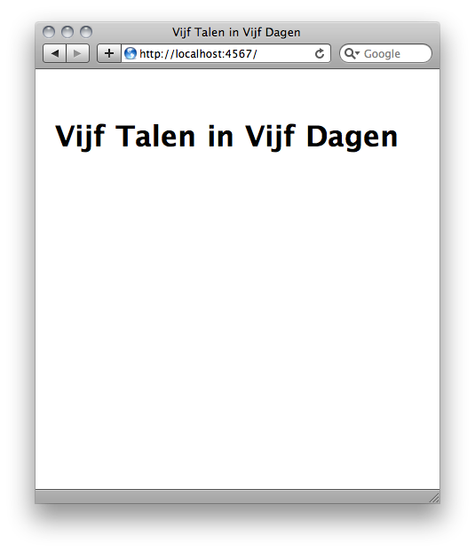

Exercises
Each exercise has a number of separate parts, you're free to choose any of the parts or complete them all. There are also some bonus tasks if you feel up for the challenge. Good luck!
If you want to look through all Ruby syntax really quickly, you can use the Ruby quick reference.
1. Parsing HTTP headers
The goal of this exercise is to parse the headers provided in the examples directory. You can find the files accompanying this exercise in exercises/parsing-http-headers.
1.1. Parsing
Parse the input shown on the left and try to generate the Ruby hash shown on the right.
Date: Sun, 25 Apr 2010 12:17:38 GMT
Server: Apache/2.2.14 (Unix)
Content-Length: 44
Content-Type: text/html{
'date' => 'Sun, 25 Apr 2010 12:17:38 GMT',
'server' => 'Apache/2.2.14 (Unix)',
'content-length' => '44',
'content-type' => 'text/html'
}1.2. Reading from a file
In the examples directory you can find a number of files with examples of HTTP headers. Figure out how to read these files from disk and parse them. In expected you can find files with the same names. These files contain the ‘solutions’.
1.3. Respecting types
The header values are currently all strings. The assignment is to convert them to objects with a more fitting class. For instance, the ‘date’ header could be a Time object. Figure out how to automatically cast all the header values.
Date: Sun, 25 Apr 2010 12:17:38 GMT
Server: Apache/2.2.14 (Unix)
Content-Length: 44
Content-Type: text/html{
'date' => Time.utc(2010, 3, 25, 12, 17, 38),
'server' => 'Apache/2.2.14 (Unix)',
'content-length' => 44,
'content-type' => 'text/html'
}You can either look at the examples or you can find out all possible header values from the HTTP 1.1 RFC. The relevant sections are General Header Fields, Request Header Fields, Response Header Fields
1.4. Bonus: Status line
The supplied headers are in fact only part of the complete HTTP request or response. Find a
way to also parse the status line contained in the examples and come up with a nice way to
store them. Maybe you can define a Request or Response class?
1.5. Bonus: Writing automated tests
For extra bonus points you can try to write automated tests for your code using the examples and solutions. There is a short article over at Wikibooks about testing Ruby with test/unit.
2. Drawing graphs
In this exercise the goal is to draw graphs using a PNG library. You can find the data files for this exercise in the drawing-graphs directory.
$ gem install chunky_pngOr otherwise install from source: Chunky PNG source.
Documentation for Chunky PNG can be found on its GitHub wiki or in the RDoc documentation.
2.1. Reading data files
The data files for this exercise contain integer values. Read these values from the files and store them as integers in an array.
2.2. Drawing lines on a canvas
Use the PNG library and create an image of 64 by 65 pixels. The image should have a black background and a white line running through the center from left to right. It should look like the image below.
2.3. Drawing the values from the data file as a bar graph
Render the values read from the data files as a bar graph into a PNG. Fit the values in the 64 by 65 pixel image you created in the previous part of the exercise.
2.4. Bonus: Rendering an actual sine
For extra points try to render a sine using a sine function on a larger image.
2.5. Bonus: Writing automated tests
How would you go about writing automated tests for the rendered image? What are the pros and cons for such a solution?
3. Web app
In the last exercise we will write a small web app. The web app will allow visitors to post a short opinion about the course.
You're welcome to use anything to accomplish this. A few possible projects of interest are: Rack, Ruby on Rails, Ramaze, and Sinatra.
If you don't want to choose, you should probably pick Sinatra. It's easiest to learn. The Sinatra intro explains how to install it. It's also a quick way to learn Sinatra.
3.1. Rendering a front page
Render a front page with a title when someone visits your website on the root /.

3.2. Adding a form
Add a form to the homepage that allows visitors to type their message. Save the message sent by people and store them in a database. The easiest way to set up a database is to probably to use Datamapper with a Sqlite3 backend. Alternatively you can use your favorite search engine to find alternatives and install instructions.
$ gem install datamapper dm-sqlite-adapter3.3. Showing the messages
Show all messages posted by visitors under the form.
3.4. Bonus: don't allow blank messages
If you haven't done this previously, make sure you don't allow blank posts. Show a nice error messages to visitors to remind them of their folly.

3.5. Bonus: writing automated tests
How do you test a web application? Do you test through the whole stack; web server, framework, application code, and rendering engine? How will the way you test impact further development?
Try to write a least one functional test for your front page.
If you're using Sinatra, you can read the documentation about testing.